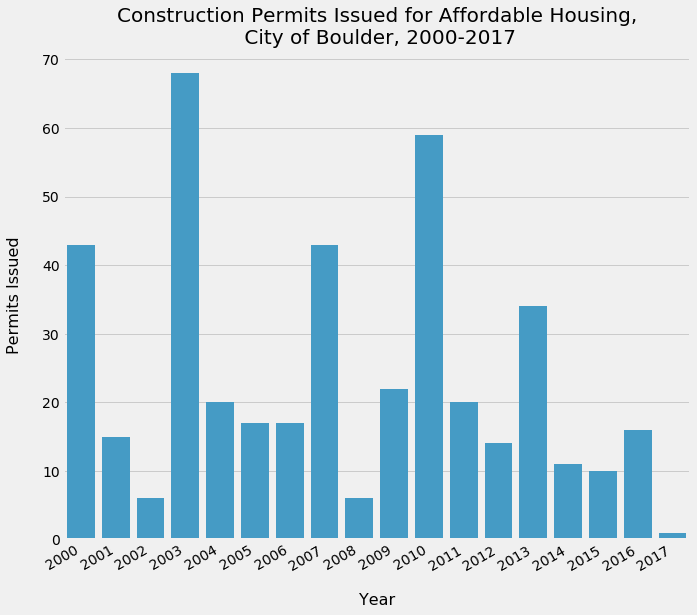

City of Boulder Construction Permits Sample Analysis
Using the Construction Permits data set from Boulder's Open Data portal, I sought to understand affordable housing from the perspective of housing permits applied for, approved, and issued. The data set includes a variety of variables to explore including year, permit type, project value, contractor, and new residential units. The analysis here only represents a small sample of the potential for exploring this data set further, a process that would ideally involve speaking to subject matter experts regarding construction permits in Boulder. Within the bounds of the allotted time and my limited domain knowledge, I sought to understand the nature of work invested in Boulder's affordable housing as viewed through the permitting process, and changes in the permitting process as viewed in the data across time.
For this project I used the Python programming language to ingest, clean, manipulate, and visualize the dataset.
Permit Volume
Permit volume for affordable housing projects does not follow the pattern of permits overall, which trends upward across the time frame.
Value By Type
Among the six most prevelant permit types in the affordable housing permit subset, annual counts tend to track together, suggesting that permits are often multifaceted projects involving many different kinds of work.
Project Value
Project values vary substantially across years. Incongruous trends between project value and permits by type suggests that the presence or absence of a few, large-scale projects often drives the cumulative valuations for any given year.
Contractors

Ten contractors are linked to 10 or more permit applications in the study period (some contractors, such as Deneuve Construction Services and Deneuve Design, Inc., may represent the same entity with varying designations).
Location
The map above show the locations of all affordable housing permit projects during the study period. By clicking on the markers, one can read details of each record. With additional design, the site markers could be modified to reflect different factors associated with each project, such as issue date or building type.